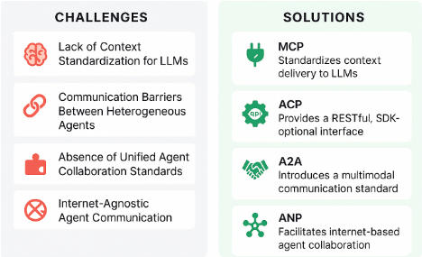
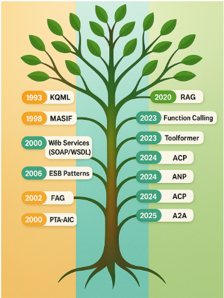
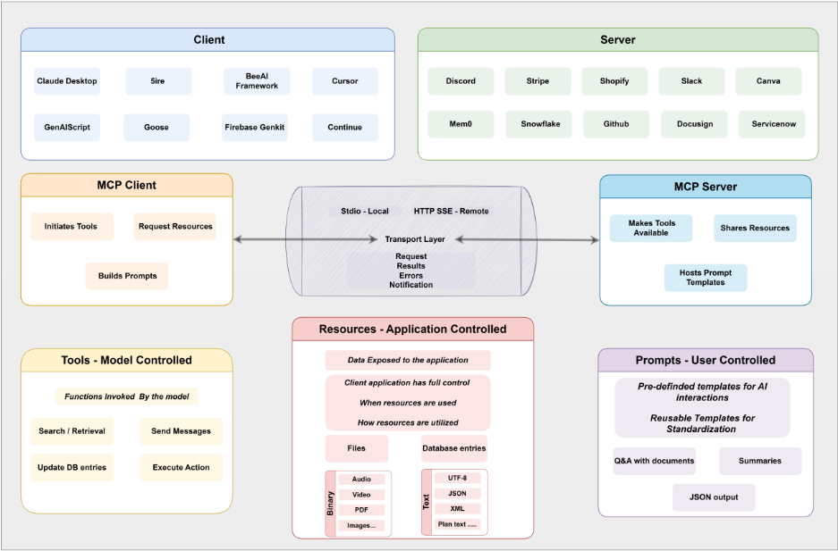
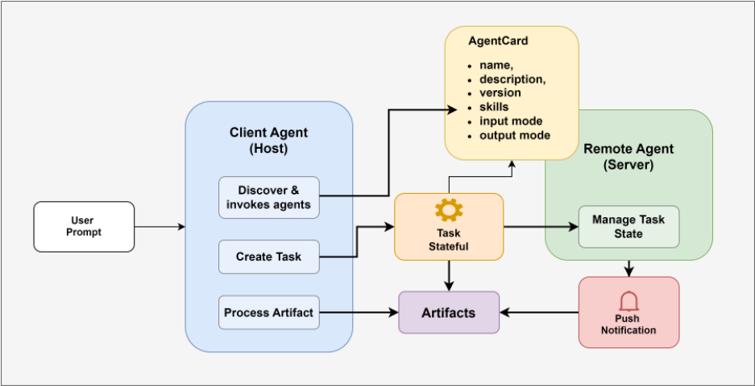
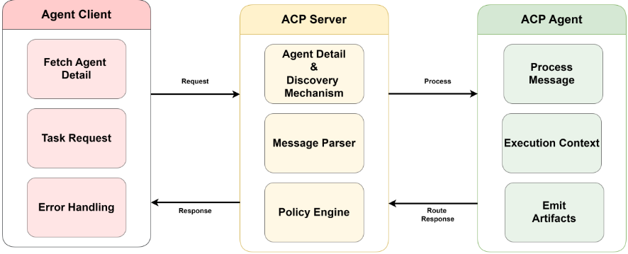
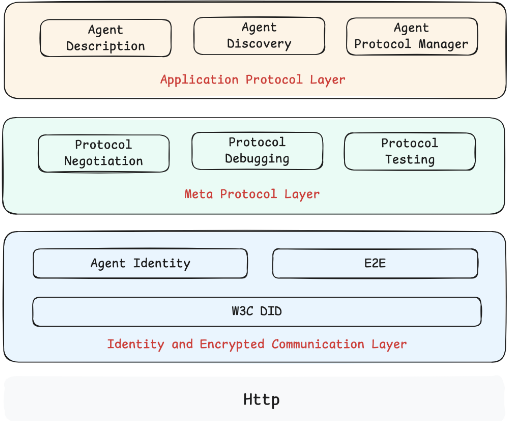

Agent 互操作协议综述：Model Context Protocol (MCP)、Agent Communication Protocol (ACP)、Agent-to-Agent Protocol (A2A) 与 Agent Network Protocol (ANP)
LLM 驱动的自主 Agent 在工具集成、上下文共享与跨系统任务协作上缺乏统一标准，ad-hoc 集成难以扩展、安全化并跨领域泛化。该综述系统梳理四个新兴 Agent 互操作协议：MCP 以 JSON-RPC client-server 模式标准化工具调用与类型化数据交换；ACP 基于 RESTful HTTP 支持 MIME 类型化多模态消息与同步/异步交互；A2A 通过 Agent Card 实现点对点任务委托与企业内协作；ANP 借助 W3C DID 与 JSON-LD 支持开放互联网上的去中心化 Agent 发现与协作。论文从交互模式、发现机制、通信模式与安全模型等维度横向对比四个协议，并为每个协议梳理生命周期各阶段的安全威胁与缓解措施。核心结论是没有单一协议能覆盖所有场景，作者提出分阶段采用路线图：先以 MCP 做工具接入，再以 ACP 做结构化多模态消息与会话感知交互，进而用 A2A 做协作任务执行，最终扩展到 ANP 的去中心化 Agent 市场。
LLM 驱动的 Agent 生态中，工具集成、上下文交付与 Agent 间协作的互操作实践碎片化，缺乏统一协议，导致集成、安全与规模化困难；已有综述多聚焦高层工作流（协作模式、记忆架构、编排策略），忽略了动态对等发现、能力协商与安全工具调用所需的底层协议标准。
对 MCP、ACP、A2A、ANP 四个协议在统一框架下做架构综述与对比：MCP 采用 JSON-RPC 2.0 client-server 模型，提供 Tools/Resources/Prompts/Sampling 四类核心原语与 Initialization-Operation-Shutdown 三阶段生命周期；A2A 以 User/Client Agent/Remote Agent 三角色组织，通过 Agent Card 发布与发现能力，以 Task/Messages/Artifacts 结构化任务委托，传输层使用 JSON-RPC 2.0、SSE 与 Push Notification；ACP 是 RESTful HTTP 中间件架构，采用有序 MIME 类型化消息部件、会话持久化与多种发现机制（registry API、/.well-known/agent.yml）；ANP 基于 W3C DID（did:wba 方法）、JSON-LD Agent Description 与 .well-known/agent-descriptions 发现目录，并支持 Meta-Protocol 动态协商。论文还逐一梳理各协议生命周期安全威胁与缓解策略，并给出 MCP→ACP→A2A→ANP 的分阶段采用路线图。
未在论文中说明
区别于已有聚焦高层多智能体工作流（协作模式、记忆架构、编排策略）的综述，本文补齐协议层视角：将 KQML/FIPA-ACL 到 function calling 的协议演进脉络与 MCP/ACP/A2A/ANP 置于统一生命周期与对比维度（交互模式、发现机制、通信模式、安全模型）下分析，并给出可操作的分阶段采用路线图，而非仅罗列协议特性。
相关度级别：high
命中能力域：3.1 上下文工程与记忆 | 3.3 Agent 架构与工具使用 | 3.4 多智能体协作 | 3.5 评测与可靠使用
理由：直接命中团队 3.3 与 3.4 域：MCP 正是团队做工具/技能接入（把代码库、CI、测试、知识库检索等内部能力封装为 Tools/Resources 供 Agent 调用）的核心协议标准，A2A/ACP/ANP 则对应多 Agent 系统的通信、任务委托与发现设计。各协议生命周期安全威胁与缓解表（tool poisoning、command injection 等）为 3.5 域的可靠落地提供安全评审清单；MCP 对结构化上下文交付（Resources/Prompts/Sampling）的标准化也与 3.1 域的上下文组织相关。作为综述它不提供新方法或实验数据，但为团队 Agent 架构选型与协议演进规划提供决策框架。
建议动作：深入精读并做内部分享
arXiv:2505.02279v2 [cs.AI] 2025年5月23日
肯特州立大学，美国俄亥俄州肯特市
克利夫兰州立大学，美国俄亥俄州克利夫兰市
a.singh22@csuohio.edu
东北大学，美国马萨诸塞州波士顿市
大语言模型（LLMs）已成为现代人工智能的核心，驱动着运行于云端、边缘和桌面环境的自主智能体 [1, 2]。这些智能体 [3] 摄取上下文信息，
扬斯敦州立大学（Youngstown State University），美国俄亥俄州扬斯敦，gkgupta@student.ysu.edu
执行任务，并与外部服务或工具交互。然而，不一致且碎片化的互操作性实践使得 LLM 驱动的智能体之间的通信难以集成、确保安全并实现扩展 [4]。
互操作性（即不同智能体与系统之间发现能力、交换上下文并无缝协调行动的能力）对于模块化、可复用且富有弹性的多智能体 [5] 工作流至关重要。标准化协议可降低开发开销、提升安全性，并支持跨平台协作。清晰且被普遍采用的标准仍处于起步阶段。
本综述考察了四种新兴的智能体通信协议，每种协议各自针对不同的互操作性层级：
本文针对每种协议综述了其架构细节、集成方法、通信模式以及安全考量。通过对比，突出了交互模式、发现机制、通信模型和安全框架方面的权衡。分阶段采用路线图为 MCP、A2A、ACP 和 ANP 规定了先后顺序，以指导在真实世界智能体生态系统中的渐进式部署。
本文其余部分的组织结构如下。第 2 节讨论智能体互操作性面临的挑战。第 3 节回顾背景与相关工作。第 4-7 节分别描述 MCP、A2A、ACP 和 ANP 的架构。第 8 节给出对比评估。第 9 节概述分阶段采用路线图。第 10 节总结全文并提出未来研究方向。
AI 智能体（AI agent）被定义为任何一种自主软件实体，它通过输入（例如用户查询、传感器数据）感知其所处的环境，并通过输出（例如 API 调用、消息）对环境施加作用，以实现既定目标 [18]。智能体在具有可观测性、确定性、情节性和动态性等维度特征的环境中运行，并可借助传感器和执行器与物理或虚拟世界模型进行交互 [18, 19]。

3
根据 Franklin 和 Graesser 的分类法，可以依据自主性、社交性、反应性和适应性等属性对智能体进行分类，这些属性反映了智能体在开放的多智能体环境中运作的能力 [20]。Jennings 强调，主动的目标生成、复杂的规划以及在不确定性下稳健的恢复能力，是智能体区别于简单反应式程序的关键特征 [21]。Wooldridge 进一步归纳出四个核心属性——自主性（autonomy）、社交能力（social ability）、反应性（reactivity）和主动性（pro-activeness）——正是这些属性使智能体能够在无需人类直接干预的情况下运行、与同伴协作并追求长期目标 [19]。
智能体架构的范围从简单的基于规则的反应式模型（其中动作是对感知的直接响应）延伸到丰富的慎思式（deliberative）框架，例如支持符号推理、动态计划执行和意图重新考虑的信念-愿望-意图（Belief-Desire-Intention, BDI）系统。在多智能体系统中，协调通过通信协议、协商策略和组织结构来实现，这为需要强大互操作性、安全性与可扩展性的大语言模型（LLM）驱动生态系统奠定了基础。这一宽泛而精确的定义为我们后续对通信标准、编排框架和协议设计的综述提供了支撑。
最早的形式化智能体消息语言出现于20世纪90年代初，其目标是为基于知识的系统提供标准化的“信封”和施为语词汇表。Genesereth 和 Ketchpel 提出的知识查询与操作语言（Knowledge Query and Manipulation Language, KQML）定义了一组言语行为施为语（如 ask-if、tell、reply），以及一个灵活的消息信封，支持诸如 :content、:language、:ontology、:receiver 和 :reply-with 等参数。KQML 还规定了内容语言绑定（通常为 KIF），以机器可解释的形式表达命题 [22, 23]。尽管 KQML 在 DARPA 的“开放知识库与智能体”（Open Knowledge Base and Agent）项目中得到广泛应用，但其施为语缺乏形式化语义，加之重量级的 XML 风格编码，阻碍了其大规模部署。
在 KQML 的基础上，由智能物理智能体基金会（Foundation for Intelligent Physical Agents）于2000年正式批准的 FIPA 智能体通信语言（FIPA Agent Communication Language, FIPA-ACL）通过规定基于智能体心智状态（信念、愿望、意图）的精确前置条件与后置条件语义，细化了通信行为的概念。FIPA-ACL 定义了更为丰富的施为语集合（如 agree、refuse、request），标准化了内容语言（如 SL0、SL1），并为合同网（contract net）、迭代合同网（iterated contract net）以及订阅/通知（subscribe/notify）等常见模式概述了相应的交互协议 [24]。JADE 和 JACK 等平台中的参考实现提供了基于 Java 的智能体容器和消息处理 API，然而 FIPA 本体管理的复杂性，加上冗长的 XML 编码，使其应用局限于学术和国防用例，而未能进入轻量级的工业级系统。
21 世纪初，面向服务的架构（SOA）兴起，企业系统将功能以 Web 服务（SOAP、WSDL、WS-* 标准）的形式对外暴露，并将端点注册到 UDDI 存储库中 [25]。面向消息的中间件以及 Apache Camel、Mule ESB 等企业服务总线（ESB）支持协议桥接、消息路由和载荷转换，并借助基于内容的路由、消息拆分和聚合等模式 [26]。尽管 SOA 和 ESB 将服务提供者与消费者解耦，但随着 API 的不断演进和安全要求的日益收紧，它们往往带来较高的运维复杂性、脆弱的适配器以及配置蔓延问题。
随着大语言模型（LLM）的出现，检索增强生成（RAG）于 2020 年问世，它通过将稠密向量检索与自回归解码相耦合，把外部知识整合进生成流水线 [27]。RAG 系统在共享的嵌入空间（例如 DPR）中对查询和文档进行编码，以获取 topk 个相关段落，然后使 LLM 的输出以检索到的上下文为条件，从而减少幻觉并支持动态知识更新 [28]。尽管 RAG 提升了事实性与灵活性，但 RAG 框架将检索与生成视为相互独立的批处理过程，并未规定 LLM 应如何将接地内容转化为可执行的操作，或如何编排多步骤工作流——这凸显了对能够将知识接地与动作调用统一起来的协议级标准的需求。
以 GPT-3.5、GPT-4、Claude 和 Gemini 为代表的大语言模型（LLM）的快速演进，使模型无需定制规则引擎即可对复杂的自然语言指令实现零样本和少样本理解，从而从根本上改变了 Agent 的设计方式 [2]。这些基础模型能够解析用户意图、规划多步骤工作流，并在多样化领域中保持对话连贯性，从而为将语言推理与外部工具执行相结合的“LLM Agent”打开了大门。
4
为了将工具调用付诸实施，OpenAI 于 2023 年推出了函数调用（function calling）——一种轻量级协议，LLM 可据此输出与预定义 API 端点相对应的 JSON 格式签名 [29]。在这一范式下，开发者向模型提供一份函数定义目录——每个定义由名称、参数的 JSON schema 以及描述性帮助文本构成——由模型在生成时决定是否调用某个函数，并输出格式良好的 JSON，供下游系统解析和执行。这种方法将自然语言理解与动作调用统一起来，使得在单次 LLM 响应之内即可完成实时数据获取、数据库查询和事务性操作。
在这一核心能力的基础上，涌现出若干旨在简化 Agent 开发的框架：
尽管取得了这些进展，当前的函数调用生态系统仍存在若干局限。工具定义通常是静态的：每当新增 API 或 schema 发生变更时，Agent 都必须重新初始化，因而无法实现真正的动态发现。安全边界——例如身份验证令牌、速率限制和访问控制——则是临时拼凑且依赖于特定框架的，增加了未授权调用的风险。此外，每个框架都采用各自的元数据约定，阻碍了工具的跨框架复用，并且需要定制适配器才能实现互操作性 [33]。要应对这些挑战，就需要协议级标准，为函数元数据规定统一的 schema、支持动态能力协商，并在异构 LLM Agent 平台之间提供端到端的安全保障。
近期的进展已将大语言模型（LLM）的能力从推理扩展到对外部工具调用的编排。Toolformer 采用一种自监督掩码策略，在预训练期间暴露潜在的 API 调用，使模型能够在文本生成过程中学习何时以及如何调用函数 [34]。ReAct 将思维链（CoT）推理与显式动作调用交替进行，使模型能够基于中间观察结果在“思考”步骤与工具调用之间交替切换 [35]。这些方法在单智能体层面统一了推理与行动，但并未解决对等发现或多智能体协调问题。
作为对这些算法技术的补充，若干轻量级框架应运而生，能够以最少的样板代码支持多智能体编排（表 1）。其他编排系统，例如 AutoGPT 的自主循环 [36] 和 Reflexion 的迭代式自我改进机制 [37]，凸显了反馈与自适应在智能体工作流中的价值。然而，这些框架仍然依赖静态工具注册表和定制的通信层。纵观这些方法，由于缺乏用于能力通告、对等认证和跨框架组合的标准化协议，导致了碎片化——阻碍了内聚且可互操作的智能体生态系统的形成。
智能体互操作性的演进通过可视化时间线（图 2）和详细表格（表 2）加以展示。时间线记录了高层面的里程碑，而表格则提供了技术细节，描述每项发展及其关键贡献。二者共同勾勒出互操作性标准与协议随时间推移的发展轨迹。
由此呈现出三个截然不同的演进阶段：
5
| Framework | Core Feature | Reference |
|---|---|---|
| CrewAI | High-level crew abstractions for role assignment, subtask delegation, and message routing among agents | [38] |
| SmolAgents | Single-file Python library combining retrieval, vision, and agent loop primitives for rapid prototyping | [39] |
| AG2 (AutoGen) | Open-source AgentOS with human-in-the-loop checkpoints, policy enforcement hooks, and lifecycle management | [40] |
| Semantic Kernel | Enterprise-grade SDK unifying memory stores, planning modules, and plugin orchestration across sessions | [41] |
| Swarm | Stateless multi-agent coordination via JSON-RPC routines, spawning and aggregating parallel agent tasks | [42] |
| Framework | Core Feature | Reference |
| Year | Milestone | Key Contribution |
|---|---|---|
| 1993 | KQML | Introduced speech-act primitives and a flexible message envelope for knowledge-based agents [22]. |
| 1998 | MASIF | Defined basic service registration and discovery mechanisms for agent environments [43]. |
| 2000 | FIPA-ACL | Standardized performative semantics, content languages, and interaction protocols with formal pre-/post-conditions [24]. |
| 2002 | Web Services (SOAP/WSDL) | Enabled service-oriented agent integration via UDDI, XML messaging, and contract definitions [25]. |
| 2006 | ESB Patterns | Codified enterprise integration patterns (routing, transformation) in ESBs like Apache Camel and Mule [26]. |
| 2020 | RAG | Coupled dense vector retrieval with LLM decoding to ground outputs in external corpora [27]. |
| 2023 | Function Calling | Allowed LLMs to emit JSON-formatted API calls against a catalog of function schemas [29]. |
| 2023 | Toolformer | Trained LLMs via self-supervised masking to predict API call placement in text [34]. |
| 2023 | ReAct | Interleaved chain-of-thought reasoning and explicit action calls for dynamic workflows [35]. |
| 2024 | MCP | Proposed a JSON-RPC protocol for standardized context ingestion and tool invocation [6]. |
| 2024 | ANP | Peer-to-peer protocol enabling cross-platform and cross-organization agent communication over the open internet. [11]. |
| 2024 | ACP | Defined performative messaging primitives with formal types and security layers [10]. |
| 2025 | A2A | Introduced peer discovery, capability exchange, and decentralized agent dialogues [9]. |
| Year | Milestone | Key Contribution |
客户端应用程序（Host）是 MCP 生态系统中交互的发起者。它负责管理与一个或多个 MCP Server 的连接，并按照协议规范编排通信工作流。在实践中，客户端负责初始化会话，请求并处理四类核心原语 Resources、Tools、Prompts 和 Sampling，并处理与服务器端事件相关的异步通知。客户端还必须实现健壮的错误处理例程，以妥善应对通信故障或超时情况，从而确保与远程 MCP Server 的可靠协作。
6


7
MCPServer 充当数据、服务和交互模板的提供者，客户端可利用这些内容来丰富基于 LLM 的工作流。它负责暴露并管理上下文 Resources，通过 Tools 执行外部操作，定义可复用的 Prompts 以实现一致的交互模式，并可选择性地通过 Sampling 委托文本生成任务。除响应请求外，服务器还负责实施访问控制策略、维护运行安全，并发出反映其可用能力变化的通知。这种提供者侧的架构通过将复杂或动态资源的访问模块化，与客户端的编排逻辑形成互补。
模型上下文协议（MCP）由若干分层抽象构成，这些抽象共同规定了通信的结构与语义。最底层是协议层（Protocol Layer），它基于 JSON-RPC 2.0 规范定义消息交换的语义，确保每个请求都与相应的响应相关联，并且所有交互都遵循可预测的模式。在此之上，传输层（Transport Layer）负责客户端与服务器之间消息的物理传输，既支持通过 Stdio 实现的本地通信，也支持基于网络的通道，例如带有可选服务器发送事件（Server-Sent Events, SSE）的 HTTP。在最高抽象层级，MCP 将消息组织为四种类型：请求（Requests），即期望得到回复的调用；结果（Results），即对先前请求的成功响应；以及错误（Errors），用于指示失败或无效调用。第四种类型是通知（Notifications），用于无需客户端确认的异步更新。
MCP Server 提供四种核心能力：工具（Tools）、资源（Resources）、提示（Prompts）和采样（Sampling），每一种都对应一种不同的控制模型，用于规范客户端、服务器与大语言模型（LLM）之间的交互。
工具（Tools）是由模型控制的能力，允许 LLM 调用外部 API 或服务，通常是自动进行的，有时需要用户批准。这有助于与第三方系统实现无缝集成，并简化对真实世界数据和操作的访问。
资源（Resources）是由应用控制的元素，例如结构化文档或上下文数据集，由客户端应用进行选择和管理。它们为 LLM 提供定制的、面向特定任务的输入，并支持具备上下文感知能力的补全。
提示（Prompts）是由用户控制的模板，由服务器定义，但由最终用户通过客户端界面选择。这些可复用的提示有助于保持一致性、减少冗余，并支持可重复的交互模式。
采样（Sampling）由服务器控制，允许 MCP Server 将生成 LLM 补全的任务委托给客户端。这支持复杂的智能体（agentic）工作流，并能够对模型的生成过程进行细粒度的监督，包括动态调整温度（temperature）、长度及其他采样参数的能力。
模型上下文协议（Model Context Protocol, MCP）为客户端-服务器交互定义了一个三阶段的生命周期，旨在确保健壮的会话管理、安全的能力协商以及干净的终止。这三个阶段——初始化（Initialization）、运行（Operation）和关闭（Shutdown）——对应于客户端应用（Client Application）与 MCP Server 之间通信的时间先后顺序。
初始化阶段首先建立协议兼容性并交换所支持的能力。在版本协商过程中，客户端与服务器就双方共同支持的最高协议版本达成一致。随后进行能力交换，双方各自声明可在会话期间使用的可选特性——例如采样（sampling）、提示（prompts）、工具（tools）和日志（logging）。该阶段以客户端在收到服务器的 initialize 响应后发送 notifications/initialized 消息而告终，表明已准备好进入运行通信。
运行阶段是核心的活动阶段，在此期间客户端与服务器按照协商的能力交换 JSON-RPC 方法调用和通知。双方都应严格遵守在初始化阶段商定的特性，以确保兼容性和可预测性。每次任务调用都可以包含一个可配置的超时（timeout），如果在该时间窗口内未收到响应，客户端可以发出取消通知，以防止资源耗尽或产生失效的执行线程。
关闭阶段确保会话以干净且可预测的方式结束。任何一方都可以通过关闭传输层（通常是 HTTP 或 stdio）来发起终止，这标志着通信的结束。在关闭时，客户端和服务器都负责资源清理，包括移除活动的超时、取消订阅以及释放任何已派生的子进程。在此之后，不应再发送新的协议消息，但 ping 或日志刷新（log flush）事件等必要的诊断操作除外。
8
随着 MCP 在企业和开发者生态系统中的采用日益增多，其生命周期在初始化、运行和更新各阶段引入了多种安全漏洞。这些风险包括工具投毒（tool poisoning）、权限持久化（privilege persistence）和命令注入（command injection）等，其中许多风险会因大语言模型（LLM）易受提示操纵以及执行轨迹不透明而被放大。
表 3 总结了在 MCP 部署的各个生命周期阶段中识别出的最关键安全威胁，及其相应的缓解策略和权威参考文献。这一综合梳理既反映了当前已披露的攻击，也反映了近期审计和协议评审中的最佳实践防御措施。
| Phase | Threat | Description | Mitigation Strategy |
|---|---|---|---|
| Creation | Installer Spoofing | Malicious packages introduced during build or install pipelines. | Enforce SBOMs, digital signatures, and reproducible builds. |
| Supply-Chain Backdoors | Persistent malware via CI/CD artifacts. | Harden CI/CD, validate manifests, and verify artifact integrity. | |
| Name Collision | Impersonation of trusted MCP agents using similar names. | Use Sigstore and DIDs to ensure unique, verifiable identities. | |
| No Auth Handshake | Clients connect to unauthenticated or rogue servers. | Enforce mutual authentication and TLS-based validation. | |
| Operation | Tool Poisoning | Malicious prompts or metadata influencing LLM behavior. | Validate schemas, use filtering (YARA/RegEx), and apply semantic guards. |
| Credential Theft | Secrets leaked via completions or tool output. | Use OAuth 2.1 + PKCE, restrict token scopes, and enforce mTLS. | |
| Sandbox Escape | Tools access host OS or bypass isolation. | Use syscall filters, AppArmor, and container hardening. | |
| Remote Access Control | LLMs inject SSH keys or create backdoor shells. | Monitor with EDR/HIDS and restrict outbound behavior. | |
| Command Injection / RCE | Unsafe inputs trigger system execution. | Sanitize inputs, disable shell access, and disallow evals. | |
| Tool Redefinition | Tools turn malicious after validation ("rug pull"). | Use signed, versioned manifests and monitor for mutation. | |
| Cross-Server Shadowing | One server overrides another's tool references. | Enforce scoped namespaces and validate routing origins. | |
| Lack of Visibility | Clients cannot inspect tool instructions or payloads. | Enable debug mode, metadata introspection, and logging. | |
| Update | Version Drift | Older vulnerable MCP versions remain in use. | Use GitOps for drift detection and enforce auto-remediation. |
| Privilege Persistence | Retained elevated roles or old token scopes. | Audit roles after updates and rotate credentials. | |
| Configuration Drift | Misconfigurations introduced post-update. | Validate against CVEs and apply hardened defaults. | |
| Unsigned Tool Manifests | Manifests altered or injected post-deployment. | Enforce signature checks and block unsigned tools. |
| Phase | Threat | Description | Mitigation Strategy |
9

智能体到智能体（Agent-to-Agent，A2A）架构促进不同智能体系统之间的通信与协作，以完成任务。它由三个主要参与者组成：用户（User）、客户端 Agent（Client Agent）和远程 Agent（Remote Agent，即服务器），它们通过一个定义明确的协议进行交互，从而实现安全且可互操作的执行。
用户（User）发起任务或请求，通常无需理解或直接与底层智能体系统交互。客户端 Agent（Client Agent）接收该请求，分析其意图，并通过查看 Agent Card 中公布的能力来识别合适的远程 Agent（Remote Agent，即服务器）。一旦选定，客户端 Agent 便委托远程 Agent 执行任务，协调消息交换并获取结果——称为工件（Artifact）——随后将这些结果返回给用户。
用户（User）是任何 A2A 交互的发起者，体现了启动智能体化流程的意图或需求。用户虽然通常是人类终端用户，但在分层工作流中也可以是系统、服务或另一个 Agent。无论其形式如何，用户都不直接与远程 Agent 交互，而是依靠客户端 Agent 将其请求转化为可执行的任务，并由客户端 Agent 居中传递所有响应。
A2A 支持多样化的用户交互模式。直接终端用户（Direct End-User）可以通过聊天机器人或语音助手等界面与客户端 Agent 交互，提供任务输入并实时接收结果。间接终端用户（Indirect End-User）则与更高层次的系统交互，这些系统在幕后透明地使用 A2A Agent，例如企业仪表板或编排工具。系统或服务也可以充当用户，自主调用 A2A Agent 来执行数据转换或监控等工作流。在多智能体层级结构中，当一个 Agent 触发另一个 Agent 执行下游操作以完成复杂任务时，就会出现“Agent 作为用户”（Agent as User）的场景。这些多样的用户范式凸显了该协议对用户身份的不可知性，并强调其重点在于标准化客户端 Agent 与远程 Agent 之间的通信。
客户端 Agent 充当中介，代表用户的意图，并与远程 Agent 协调以实现该意图。其职责贯穿任务生命周期的多个阶段。它首先执行 Agent 发现（Agent Discovery），检索并评估描述每个远程 Agent 的技能、能力、输入/输出规范和认证要求的 Agent 卡片（Agent Card）。基于这一发现，客户端会选择一个与用户任务相匹配的远程 Agent。接下来，客户端 Agent 负责任务发起（Task Initiation）。它构建一个结构化的 Task 对象，封装用户的意图、相关元数据以及格式化的输入。随后，它使用格式规范的 Message 将该任务发送给选定的远程 Agent。在执行过程中，客户端 Agent 管理 Message 与 Artifact 交换（Message and Artifact Exchange）。它与远程 Agent 进行双向通信，发送新的指令或后续请求，并接收输出（称为 Artifact）以及任何中间更新。对于长时间运行或有状态的交互，它会维护会话上下文（Session Context），使用标识符将相关交互归组到统一的工作流之下。
10
客户端 Agent 还负责监督错误处理（Error Handling），解析远程 Agent 返回的任何失败响应，并执行适当的恢复策略，例如重试、回退到备选 Agent 或向用户发出通知。执行完成后，结果呈现（Result Presentation）步骤涉及将 Artifact 转换为用户可消费的格式，并将其集成到外围应用程序或用户界面中。
在支持的情况下，客户端 Agent 可以通过服务器发送事件（Server-Sent Events, SSE）或推送通知等机制处理异步通信（Asynchronous Communication）。对于 SSE，它会建立持久连接并实时流式传输更新。如果支持推送通知，客户端 Agent 会向通知服务注册，以接收通过带外方式传送的任务更新。总而言之，客户端 Agent 在 A2A 协议中扮演执行编排器、数据转换器和通信桥梁的角色，代表用户实现智能化的、上下文感知的交互。
远程 Agent（服务器端）是执行由客户端 Agent 委派任务的服务端点。它提供一个或多个技能（Skill），这些技能代表其能够执行的离散操作，范围涵盖从简单的数据检索到涉及外部 API 或数据库的复杂计算或编排。每个技能都通过其输入和输出模式（schema）进行正式定义，从而实现跨客户端的一致性调用。
为了使这些能力可被发现，远程 Agent 会发布一个 Agent Card（智能体卡片）——一种结构化的元数据文档，其中包含可用技能列表、使用说明、输入/输出格式、所支持的协议以及身份验证要求。该 Agent Card 既充当一种对外宣传，也充当交互智能体之间的接口契约。
远程 Agent 还必须管理其内部的资源使用（Resource Usage），确保在任务执行期间对计算、内存、网络和存储资源进行公平分配。在执行任务的同时，它还负责实施安全与访问控制（Security and Access Control）机制，包括对客户端进行身份验证、校验消息完整性，以及基于访问策略或令牌作用域（token scopes）授权对特定技能的访问。通过将服务能力抽象为模块化、可独立管理的组件，远程 Agent 支持了智能体生态系统内的可组合性、可靠性和互操作性。
A2A Agent 由若干核心组件构成，这些组件定义了其行为、能力与交互方式。这些组件是任何 Agent 在智能体间（agent-to-agent）生态系统中运行的操作与语义构建模块。
Agent Card（智能体卡片）充当一种自描述与发现机制。它是一份 JSON 格式的文档，公开声明 Agent 的元数据，包括其名称、版本、描述、所支持的技能以及身份验证要求。客户端 Agent 依靠 Agent Card 来发现并评估能够满足特定任务标准的远程 Agent。作为协调的主要入口点，没有 Agent Card 的 Agent 在 A2A 系统中实际上是不可见的。
技能（Skill）表示 Agent 所提供的可执行能力。每个技能由名称、用途、预期输入参数和输出格式来描述。技能通过任务（Task）来调用，并封装了 Agent 所提供的核心效用。Agent 的相关性与专业化程度直接取决于其所发布技能的广度与精确度。
任务是工作委派的原子单元。它指定要执行的技能，以及输入参数和上下文元数据。任务由客户端 Agent 发出并由远程 Agent 处理，从而实现异步或同步协作。通过以标准化格式对意图与调用进行结构化，任务使 A2A Agent 能够跨多样化系统以互操作方式运行。
消息（Message）充当 Agent 之间的主要通信通道。它们封装了诸如任务提交、中间状态更新或工件（Artifact）交付之类的数据交换与协调活动——并且可由多个类型化的部分组成，包括纯文本、结构化数据或文件引用。没有消息，智能体间的交互将无法实现，这使得消息成为 A2A 协议的基础。工件是技能执行的有形输出。远程 Agent 完成任务后，会生成可能包含结构化响应、计算结果、文档或链接数据的工件。这些输出会被传回客户端 Agent，由其呈现给用户（User）或纳入下游流程。工件代表了通过智能体协作所创造的具象化知识或价值。
A2A 协议支持多种传输机制，以实现客户端 Agent 与远程 Agent 之间的通信，并可灵活适配同步与异步两类工作流。当需要实时流式传输且双方均支持时，可以采用服务器推送事件（Server-Sent Events，SSE）。SSE 会建立一条持久的 HTTP 连接，远程 Agent 可通过该连接向客户端 Agent 发送实时状态更新或部分工件，从而在长时间运行的任务期间实现持续反馈。
在持久连接难以实现的场景中（例如移动或分布式部署），协议则支持推送通知（Push Notifications）。推送通知通过 PushNotificationService 接口实现，允许远程 Agent 经由带外通道向客户端通知任务进度或完成情况。该模型特别适用于可容忍延迟的工作流以及后台任务编排。
A2A 中的所有核心任务通信均遵循 JSON-RPC 2.0 规范。这确保了方法调用、参数传递和结果封装采用标准化格式。此外，远程 Agent 的发现通过向该 Agent 的端点发起 HTTP GET 请求来引导完成，具体即获取其 Agent 卡片（Agent Card），作为其所支持能力的结构化表示。这些机制共同实现了跨多种运行时环境的灵活、可互操作且可扩展的通信。
A2A 协议中远程 Agent 的生命周期遵循结构化的演进过程，依次经历四个关键阶段：创建（Creation）、运行（Operation）、更新（Update）和终止（Termination）。每个阶段都对应一组独特的职责，这些职责对于确保 Agent 行为的安全、可发现和可靠至关重要。
创建阶段始于 Agent 卡片的发布。Agent 卡片是一份 JSON 格式的文档，托管于 /.well-known/agent.json 路径，其中声明了诸如 Agent 名称、版本、所支持技能以及认证方案等元数据。Agent 卡片发布可用后，Agent 服务即被部署到指定端点，并被配置为通过 HTTP 处理 JSON-RPC 2.0 请求。为完成创建阶段，远程 Agent 必须实现所声明的认证机制，从而实现安全的客户端验证与访问控制。
在运行阶段，远程 Agent 依据其对外宣告的技能处理客户端 Agent（Client Agent）提交的任务（Task）。这包括接收结构化的任务载荷、执行相应的技能逻辑，以及通过 JSON-RPC 状态消息和工件（Artifact）交付来管理持续进行的通信。如果支持，该 Agent 还可以使用服务器发送事件（Server-Sent Events，SSE）以流方式发送异步更新，或通过已注册的 PushNotificationService 交付这些更新。该 Agent 负责在整个执行过程中维护内部任务状态，以确保跨交互的一致性和可追溯性。
在更新阶段，远程 Agent 刷新其能力或配置。这包括递增 Agent 卡片中的 version 字段、添加新技能或认证模式，以及应用安全补丁以保持合规性。该 Agent 还可能弃用过时的功能或遗留接口，理想情况下通过更新后的文档或显式的生命周期状态字段向客户端通告这些变更。
最后，在终止阶段，远程 Agent 优雅地逐步停止其运行。正在处理中的任务会被驱动至完成，或转换到终止状态，所有打开的 SSE 流均被关闭。随后，该服务注销其 Agent 卡片——即移除或归档已发布的元数据——并释放所分配的系统资源，确保干净地关闭，不留下任何残留暴露或失效端点。一个定义良好的远程 Agent 生命周期可增强可发现性、促进互操作性，并确保基于 Agent 的协作在更广泛的 A2A 生态系统中保持安全、一致且可预测。
安全的 A2A 部署需要应对所有生命周期阶段（创建、运行、更新和终止）中的威胁。表 4 汇总了主要漏洞及相应的缓解策略，这些内容取自 A2A 协议官方参考资料和近期的安全分析。
12
| Phase | Security Challenge | Threat Description | Mitigation Strategy |
|---|---|---|---|
| Creation | Agent Card &Manifest Spoofing | Adversaries may tamper with the Agent Card at /.well-known/agent.json , impersonating a trusted Remote Agent. | Digitally sign Agent Cards, verify checksums during retrieval, and harden CI/CD pipelines to prevent injection [9]. |
| Operation | Task Injection &Command Forgery | Malicious tasks/send or tasks/sendSubscribe calls may manipulate JSON-RPC to trigger unauthorized execution. | Enforce TLS, use JSON Web Signatures (JWS), validate schemas, and issue scoped capability tokens [44]. |
| Push Notification Hijacking | Attackers may spoof SSE endpoints or intercept notifications, leading to fake updates or leakage. | Authenticate notification channels, isolate streams per session, and sign pushed events [45]. | |
| Update | Unauthorized Capability Injection &Version Drift | Unauthorized actors may add hidden skills to Agent Cards, or clients may operate on outdated configurations. | Use immutable, versioned manifests, detect drift with GitOps, and require signed manifest diffs [46]. |
| Termination | Orphaned Resources &Audit Gaps | Tokens, SSE streams, or agent registrations may persist after use, complicating security audits. | Implement shutdown hooks, revoke credentials, and centralize audit logging with enforced retention [47]. |
| Phase | Security Challenge | Threat Description | Mitigation Strategy |

ACP agent 的生命周期与 A2A 框架的四个规范阶段紧密对应：创建、运行、更新和终止。每个阶段都确保 agent 在其整个活跃部署期间保持可发现、可互操作且安全。
创建阶段始于 agent 的配置与部署。这包括通过 Agent Detail 清单声明 agent 的能力与元数据，该清单通过符合 ACP 规范的服务器对外提供访问，例如基于 ASGI 的实现或内置实现。agent 在初始化时配备认证机制与路由逻辑，二者共同保障服务发现和下游任务执行的安全。
在运行阶段，agent 处理客户端提交的结构化 sendTask 请求。这些请求包含任务执行所需的编码参数。ACP 运行时既支持同步执行，也支持中间结果的增量式流式传输。每个任务都会经历由 ACP 执行引擎管理的明确定义的状态，例如 created、in_progress 或 awaiting。对于多轮工作流，会话级持久化确保了多次交互之间上下文的连续性。
在更新阶段，Agent Detail 清单会被刷新，以反映 agent 行为或能力的变化。这些更新可能包括新增操作、受支持的 MIME 类型或版本递增。重要的是，发现过程对此类变化具有弹性：查询 agent 注册表的客户端无需直接修改 API 即可获取最新清单，从而保持向后兼容性。
终止阶段涉及 agent 的优雅停用。所有活动任务都会被驱动至完成，正在进行的流会被关闭，agent 的清单会被注销或标记为非活动状态，以防止其被后续发现。所有已分配的资源都会被释放，会话数据会被最终处理，以确保干净且可审计的关闭。
14
基于 ACP 的系统在从 agent 注册到停用的生命周期各阶段中，面临着独特的安全挑战。表 5 总结了关键威胁及其相应的缓解策略，这些内容立足于近期的红队测试、协议和平台层面的研究。
| Phase | Security Challenge | Threat Description | Mitigation Strategy |
|---|---|---|---|
| Creation | Metadata Spoofing &Supply Chain Attacks | Attackers may publish forged Agent Detail manifests (e.g., /.well-known/agent.yml ) to impersonate agents or inject malicious skills. | Digitally sign all manifests, verify at discovery, and enforce CI/CD signature checks and artifact validation [10]. |
| Operation | Message Tampering &MITM | Adversaries can intercept or alter sendTask or getTask RPC calls, leading to payload injection or message corruption. | Use TLS for transport security and sign each message part with JWS [44]. |
| Auth Flaws &Unauthorized Access | Weak bearer token enforcement may allow unauthorized execution or task disruption. | Apply capability-scoped, short-lived tokens; enforce mutual TLS with identity revocation [46]. | |
| Persistence | Session Hijacking &Privacy Leaks | Replay attacks or token theft may occur in long-lived sessions without proper binding or encryption. | Rotate session IDs, encrypt persisted context, and minimize token lifetimes [45]. |
| Update | Version Rollback &Config Drift | Stale manifests or software may reintroduce patched vulnerabilities post-update. | Enforce immutable, versioned manifests and use GitOps to detect drift [48]. |
| Termination | Orphaned Resources &Audit Gaps | Failing to revoke tokens or close SSE streams complicates cleanup and forensics. | Drain active tasks, revoke credentials, and centralize audit logging with retention policies [48]. |
| Phase | Security Challenge | Threat Description | Mitigation Strategy |
智能体网络协议（Agent Network Protocol, ANP）是一种去中心化的点对点通信标准，专为开放互联网上的跨平台 Agent 互操作性而设计。ANP 使 Agent 能够利用结构化元数据和 AI 原生数据交换，自主地进行发现、认证与交互。以下各节将 ANP 的架构与标准化的生命周期及模块化框架对齐，其建模方式与 MCP、A2A 和 ACP 保持一致。
智能体网络协议（ANP）由一组基础组件支撑，这些组件共同支持去中心化身份、语义自描述、发现以及自适应交互。其核心是智能体身份（Agent Identity），它采用去中心化标识符（Decentralized Identifiers, DIDs）来跨平台唯一地标识智能体。具体而言，ANP 采用了 did:wba 方法，其中每个标识符对应一个由 HTTPS 托管的 DID 文档，从而利用现有的 Web 基础设施实现去中心化身份解析。
在此身份层之上构建的是智能体描述（Agent Description），它通过智能体描述协议（Agent Description Protocol, ADP）实现。这些 JSON-LD 格式的文档包含关于智能体的结构化元数据，包括其名称、能力、支持的协议、认证方案和服务端点。它们充当智能体可公开访问的档案，促进互操作性与语义理解。
智能体通过发现目录（Discovery Directory）公开其存在和能力，该目录通常位于标准化的 .well-known/agent-descriptions 端点。此目录使人类用户和自动化系统都能够检索给定域名下可用智能体的列表，为可扩展的智能体索引与搜索奠定基础。
为支持交互，ANP 兼容两类通信接口：结构化接口（Structured Interfaces），例如 JSON-RPC 和 OpenAPI；以及自然语言接口（Natural Language Interfaces），通过 YAML 或等效的模式文件定义。这两类接口均在智能体的描述中声明，并支持适应不同复杂度和用例的灵活交互模式。
15

最后，元协议协商器（Meta-Protocol Negotiator）促进智能体之间的动态协议对齐。该机制允许智能体交换其通信需求和能力的自然语言描述，并从中协商和实例化兼容的交互协议。通过支持运行时适应性与协商能力，这一层确保了即使在异构的智能体生态系统之间也能实现无缝互操作。
ANP 智能体生命周期遵循创建（Creation）、运行（Operation）、更新（Update）与终止（Termination）的标准阶段，体现了 Agent Network Protocol 的去中心化设计原则。每个阶段都确保智能体在全球分布的智能体生态系统中保持可发现、可验证和可互操作。
创建阶段始于使用 did:wba 方法生成去中心化标识符（Decentralized Identifier，DID）。该标识符与一个公开可解析的 HTTPS 端点相关联，该端点托管着智能体的 DID 文档。与此同时，智能体准备一份采用 JSON-LD 格式的自描述智能体描述（Agent Description，ADP）文档，详细说明其服务、所支持的协议以及认证机制。随后，ADP 被发布在诸如 /.well-known/agent-descriptions 的标准化路径下，从而支持基于 Web 的发现，或可选地向搜索智能体进行注册。
在运行阶段，智能体通过其 DID 文档中定义的加密凭证进行认证和交互。所有通信均遵循 ADP 中声明的结构化交互模型——例如用于精确调用的 JSON-RPC，或用于自然语言协商的基于 YAML 的接口。安全传输通过 HTTPS 建立，并且在适用的情况下，通过服务器发送事件（Server-Sent Events，SSE）或长轮询等机制支持实时通信。智能体通过调用外部服务、解释请求并以标准化格式返回结果，实现自主或协作运行。
更新阶段允许智能体修订其 ADP 文档及相关的 DID 元数据，以反映不断演进的能力或接口变更。这些更新通过索引服务的周期性爬取自动传播，或通过主动发现端点显式刷新。由于智能体身份和服务描述是独立进行版本管理和发布的，客户端可以动态适应更新，而不会破坏现有的集成。
终止阶段涉及有意停用某个智能体。这包括移除或归档其 DID 文档，以及从发现目录中撤销发布其 ADP 端点。必须撤销所有已签发的认证令牌、访问凭证或相关元数据，以确保安全。干净的关闭过程通过防止陈旧或孤立的条目残留在发现索引或可信注册表中，从而维护智能体生态系统的完整性。
16
| Phase | Security Challenge | Threat Description | Mitigation Strategy |
|---|---|---|---|
| Creation | Identity Spoofing | DID documents may be spoofed or hosted insecurely, leading to agent misidentification. | Enforce HTTPS-hosted DIDs, verify with DNS records, and require DID signature validation. |
| Operation | Unverified Agents | Malicious actors may bypass DID checks or use spoofed credentials. | Authenticate via DID public keys and validate humanAuthorization for sensitive actions. |
| Interface Tampering | Agents may alter structured interfaces or inject into natural language endpoints. | Require cryptographic signing of interfaces and log access events with source metadata. | |
| Update | Stale Descriptions | Outdated or manipulated agent metadata may deceive clients. | Automate crawling of agent descriptions and validate against known-good hashes. |
| Termination | Orphaned Identifiers | Expired DIDs or agent declarations (ADPs) may persist in registries or caches. | Use expiration timestamps and require revocation signaling during deregistration. |
| Phase | Security Challenge | Threat Description | Mitigation Strategy |
ANP 依赖 HTTP(S) 进行传输，并使用 JSON-LD 进行数据格式化。Schema.org 词汇表以及诸如 'ad:' 之类的上下文被用于实现语义上的清晰性。诸如 JSON-RPC 和 OpenAPI 等结构化接口均与之兼容，并通过 ADP 进行嵌入。
表 6 总结了 ANP 生命周期中的主要威胁及相应的缓解措施。
为了更清晰地理解主要智能体互操作协议之间的差异，表 7 对四个受到广泛讨论的框架进行了并排比较：模型上下文协议（Model Context Protocol, MCP）、智能体通信协议（Agent Communication Protocol, ACP）、智能体间协议（Agent-to-Agent Protocol, A2A）和智能体网络协议（Agent Network Protocol, ANP）。这一结构化分析突出了它们的架构选择、消息格式、发现方法、会话模型和预期用例，为理解它们在多样化部署场景中的适用性提供了洞见。
本节提出了一种基于协议成熟度、集成复杂度和用例匹配度的实用多阶段智能体互操作性部署策略。该路线图使各组织能够在支持可扩展性、可组合性和安全性的同时，采用合适的智能体通信标准。
初始阶段涉及采用模型上下文协议（Model Context Protocol, MCP），以实现大语言模型（Large Language Models, LLMs）与外部工具或资源之间的结构化且安全的交互。MCP 运行于基于 JSON-RPC 的客户端-服务器模型之上，非常适合以工具调用、确定性执行和类型化输入/输出为核心的使用场景。该阶段为单模型系统中的上下文增强奠定了基础。
第二阶段引入了智能体通信协议（Agent Communication Protocol, ACP），这是一种通用的、原生 REST 的协议，专为独立智能体之间的异步与同步通信而设计。ACP 支持 MIME 类型的多部分消息、有序的消息部分以及流式传输。这些能力使基于不同框架构建的智能体之间能够进行标准化消息传递，从而促进跨组织与跨技术边界的协作与互操作性。
17
| Aspect | MCP(Model Context Protocol) | ACP (Agent Communication Protocol) | A2A (Agent-to-Agent Protocol) | ANP (Agent Network Protocol) |
|---|---|---|---|---|
| Architecture Model | Client-Server with JSON-RPC primitives | Brokered Client-Server (Registry + Task Routing) | Peer-like Client ↔ Remote Agent | Decentralized Peer-to-Peer |
| Agent Discovery | Manual registration or static URL lookup | Registry-based | Agent Card retrieval via HTTP | Search Engine Discovery |
| Identity &Auth | Token-based auth; supports DIDs optionally | Bearer tokens, mutual TLS, JWS | DID-based handshake or out-of-band headers | Decentralized Identifiers (DID), especially did:wba |
| Message Format | JSON-RPC 2.0 with Prompts, Tools, Resources | Structured multipart messages with MIME-typed parts | Task + Artifact messaging over JSON | JSON-LD with Schema.org and ADP/Meta-Protocol negotiation |
| Core Components | Tools, Prompts, Resources, Sampling | Agent Detail, Message, Task Request, Artifact | Agent Card, Task, Message, Artifact | DID Document, Agent Description, Meta-Protocol, Structured Interface |
| Transport Layer | HTTP, Stdio, Server-Sent Events (SSE) | HTTP with incremental streams | HTTP with optional SSE + Push Notifications | HTTP with JSON-LD over TLS |
| Session Support | Stateless + optional persistent tool context | Session-aware with run state tracking | Session-aware or stateless; client-managed IDs | Stateless; DID-authenticated tokens used across connections |
| Target Scope | LLM ↔ External Tool/Service integration | Model-Agnostic, Infrastructure-level agents | Trusted enterprise task delegation | Open Internet agent interconnectivity |
| Primary Use Case | Augment LLMs with external capabilities (e.g., code, search) | Secure, typed message exchange for diverse agents | Multi-agent workflows within organizational trust boundaries | Cross-platform agent discovery, secure P2P execution |
| Strengths | Tight LLM integration; resource injection | Multimodal messaging; brokered registry; tool modularity; Offline Agent Discovery | Inter-agent negotiation; artifact-driven delegation | DID-based trustless identity; AI-native protocol negotiation |
| Limitations | Centralized server assumption; prompt injection risks | Registry required; strong assumptions on server control | Enterprise-centric; assumes agent catalog | High negotiation overhead; evolving adoption ecosystem |
| Aspect | MCP(Model Context Protocol) | ACP (Agent Communication Protocol) | A2A (Agent-to-Agent Protocol) | ANP (Agent Network Protocol) |
在面向企业的部署中，智能体到智能体（Agent-to-Agent, A2A）协议通过 Agent Card（智能体卡片）和工件（artifact）交换来促进多智能体交互。它支持动态发现以及使用预定义类型的结构化消息传递，因此非常适合在可信的组织环境中实现无状态或有状态智能体之间的协调工作流。
最终阶段是使用智能体网络协议（Agent Network Protocol, ANP）将互操作性扩展到开放互联网。ANP 支持去中心化的智能体发现、基于去中心化标识符（DID）的身份验证，以及使用 JSONLD 图的对等通信。它为可扩展的跨平台智能体市场和 AI 原生的 Web 交互奠定了基础。这种分阶段的方法使组织能够逐步采用智能体通信协议，在每个阶段实现互操作性的最大化，同时将集成复杂性降至最低。
18
随着由大语言模型（LLM）驱动的自主智能体在各领域不断涌现，对安全、模块化且可互操作的通信需求日益迫切。本综述对四种新兴协议——MCP、ACP、A2A 和 ANP——进行了结构化分析，它们各自针对智能体互操作性的不同层面。通过统一工具调用、多模态消息传递、任务协调和去中心化发现，这些协议共同构成了可扩展多智能体系统的基础。对比评估表明，没有任何单一协议能够在所有场景下都足以胜任；相反，一种分阶段、互补的采用策略——从 MCP 开始，依次经过 ACP 和 A2A，最终到 ANP——为部署智能体生态系统提供了一条切实可行的路径。未来研究应探索协议互操作性桥接、智能体协作的信任框架以及标准化的评估基准测试（benchmark），以加速协议的采用并确保实际部署中的韧性。这些基础性工作对于推进下一代智能的、网络化的智能体将至关重要。